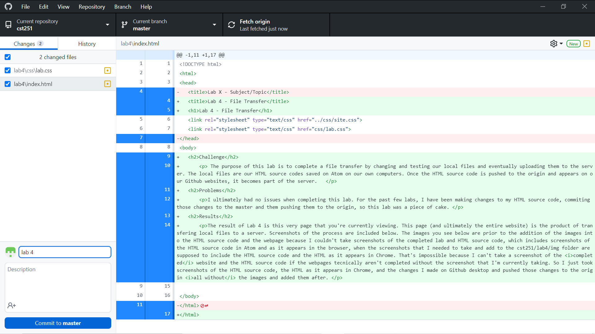

The purpose of this lab is to complete a file transfer by changing and testing our local files and eventually uploading them to the server. The local files are our HTML source codes saved on Atom on our own computers. Once the HTML source code is pushed to the origin and appears on our Github websites, it becomes part of the server.
I ultimately had no issues when completing this lab. For the past few labs, I have been making changes to my HTML source code, commiting those changes to the master and them pushing them to the origin, so this lab was a piece of cake.
The result of Lab 4 is this very page that you're currently viewing. This page (and ultimately the entire website) is the product of transfering local files to a server. Screenshots of the process are included below.
